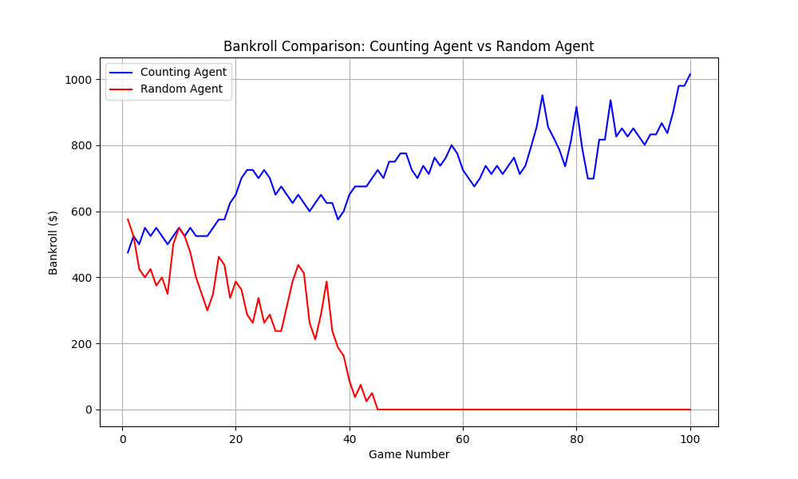
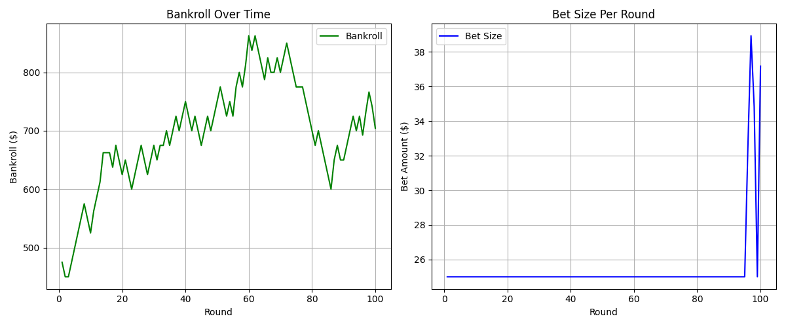
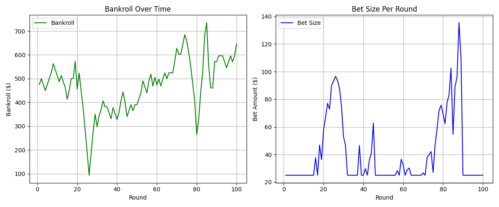
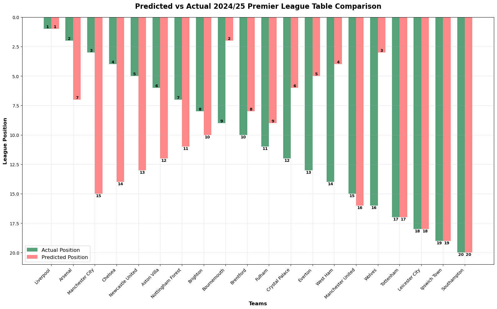
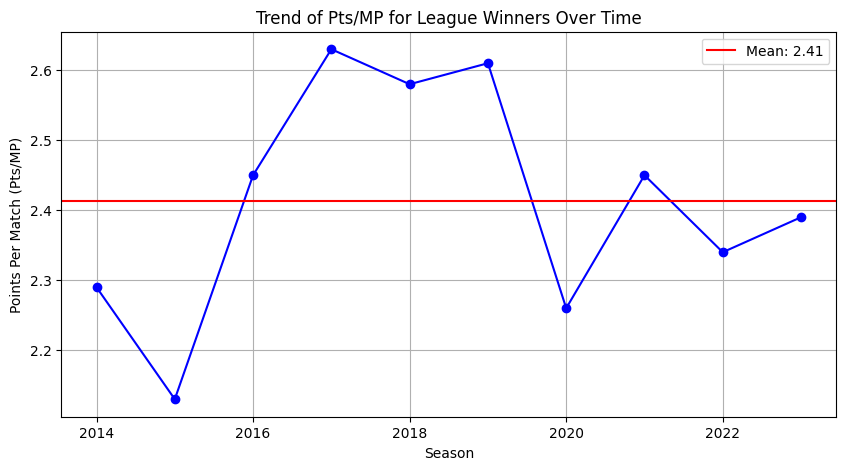

About Me

Hi, I’m Nick Nogueira, a Computer Science student at Stonehill College (Expected Graduation: May 2027), pursuing a B.S. in Computer Science with minors in Business Administration and Data Analytics. I’m a Dean’s List Spring 2026 student and, as a first-generation college student, a proud recipient of the Hispanic Scholarship Fund, Ronald E. Burton Scholarship, and the Yawkey Endowed Scholarship. I’m motivated to combine technology, leadership, and service to create meaningful impact.
Relevant Coursework
Computer Science and Data Analytics
- Intro to Programming
- Computer Science I & II
- Introduction to Data Analytics
- Introduction to Data Science
- Data Structures
- Discrete Math I & II
- Calculus I & II
- Artificial Intelligence
- Statistics for Science
- Data Visualization
- Web Programming
- Topics in Computer Science: Compilers and Theory of Computation
- Machine Learning
- Operating Systems
- Database Management Systems
- Sport Analytics
Business Administration
- Organizational Behavior
- Marketing Principles
- Financial Accounting
- Managerial Accounting
- Corporate Accounting
Technical Skills
Programming
Data Science & ML
Web Development
Data Visualization
Tools
Experience
IT & Security Intern
June 2026 – PresentBflexion
- Researched multi-tenant architecture solutions and produced comparison tables, reports, and lists evaluating possible solutions for upper management review
- Booked 8–10 internal demos and delivered 1 live demo presenting possible solutions to internal teams
- Built an AI-driven threat analysis agent using GitHub Copilot and prompt engineering, pulling from 5 company-provided sources to generate reports, score threat levels, and summarize findings
- Conducted email spam analysis to identify and flag malicious or suspicious messages, supporting the security team's threat detection efforts
IT / End User Services Intern
June 2025 – August 2025Waters Corporation — Milford, MA
- Collaborated with senior analysts on enterprise IT operations, gaining exposure to how data and systems support large-scale organizational decision-making
- Tracked and documented IT incidents and service requests in enterprise ticketing systems, identifying recurring issues to improve resolution workflows
- Assisted with IT infrastructure projects including access management, user provisioning, and system configuration for a global scientific instruments company
- Provided technical support for supported devices, applications, and systems
Projects
Counting Blackjack
A Python program that simulates blackjack strategies and card counting systems.
View Project Screenshots



Predicting Premier League Table 2024–2025
A machine learning project predicting England league outcomes using Python and data analysis.
View Project Screenshots


Premier League 24/25 — Interactive Data Visualization Dashboard
A team-based final project for CSC 321: Data Visualization. Designed and implemented an interactive dashboard using Vega-Lite to explore Premier League goal data across teams, players, and matchweeks through a user-centered design process.
BSU-Professors-Salary-vs-Professors-Rating
Analysis of Bridgewater State University professor salaries vs Rate My Professors ratings. Includes R statistical analysis and interactive Vega-Lite dashboard. Confirms no meaningful relationship (r²=0.0055, p=0.328) between student ratings and compensation, validating institutional salary structures.
Resume
Preview resume on the page
Contact
Email: nnogueira2@students.stonehill.edu
Phone: (508) 361-8847
LinkedIn: linkedin.com/in/nick-nogueira